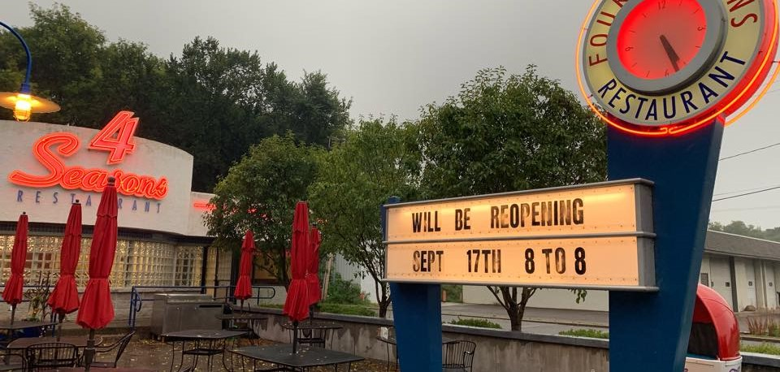

Four Seasons Restaurant has been in business since the first part of the 20th century! For the better part of that time, it was owned by Bill and Jane Smith, who worked tirelessly to create the restaurant we know today. More recently, the restaurant was re-opened on September 17, 2019, as the Smiths retired and sold the location to its current owners. Four Seasons has been around for some time and we want you to know that we are still the same restaurant you love!
At Four Seasons Restaurant, we know that good food is always in season. We are open year-round and we host different specials throughout the year, highlighting the best parts of each season. During the spring and summer months, we have our beautiful patio open to the public. During winter and fall, we keep the inside cozy and warm.
Whatever the time of year, Four Seasons is serving its classic recipes!
Did you know? Four Seasons Restaurant used to be the site of the former Wildwood Amusement Park! In the early 20th century, this park attracted visitors of all ages, from many towns over. A decade after the park closed and the road was built, Four Seasons restaurant was opened. Although we don't have any rollercoasters or merry-go-rounds, we still try to cultivate that same spirit of fun. The park may be gone, but Four Seasons is proud to be an active part of the Mahtomedi community today.
Four Seasons Restaurant participates in a number of community events throughout the year. We like to spread the word about local opportunities for both fellowship and fun!
If you are interested in learning more about an event we advertise, please reach out to us! You can contact us by filling out the website form. You are also free to call us at 651-429-2201 during regular business hours.